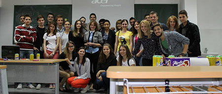
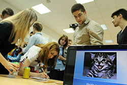
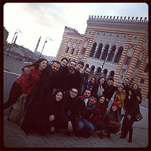

The International Association for the Exchange of Students for Technical Experience commonly referred to as IAESTE is an international organization exchanging students for technical work experience abroad.When Yugoslavia became a member of the IAESTE association in 1952, a student exchange programme started in Bosnia and Herzegovina.After a long eight year pause (1991- 1999)a group of students from Bosnia and Herzegovina applied for membership into IAESTE.Subsequently at the General Conference in Vienna (January, 2004) IAESTE BiH became a joined IAESTE member. LC (Local Comittee) Sarajevo was established in 2005. Local Committees are groups of student volunteers who promote IAESTE in their universities and local communities. Our LC has about 40 active members.


